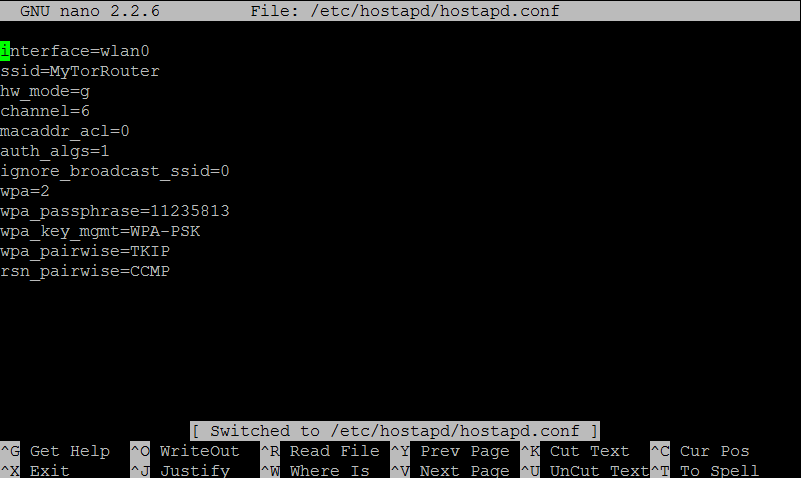

Raspberry Tor
This project uses Hostapd and Tor and also uses the linux iptables
The way it works is we create a hotspot with Hostapd and then route the requests through the Tor network.
Make it work!
To make it work simply copy the files to the SD Card and connect your Raspberry to an ethernet cable.
Then either connect directly to MyTorNetwork with the password below or change the informations in:
/etc/hostapd/hostapd.conf

Licence Information
The sources are published under the GNU General Public License v3.0.
20